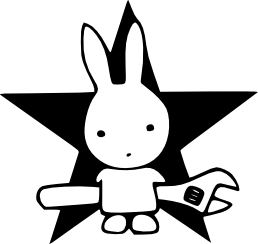

Welcome to: SecurityRabbit.com, I am rabbitear. I've been a computer geek my entire life, and working on Linux and free software since 1997.
Security research is my focus, finding software and networking protocol bugs. Learned C when I was 15 years old, now try to keep my head buried in the awe inspiring Python language. Lately I sideline in lightweight web development and online advertising to help Anchorage local businesses.
If you are interested in this geeky stuff, need a partner to learn, build something new, have me audit your online security of your business, research a specific software, or just chat about nothing, drop me a note. Always welcome a good chat :) You can find me usually in irc at freenode, at twitter account @rabbitear, check out some of my code on my github, or telnet into my bbs, at velvet.ath.cx that's been up since 1999.
I care about your privacy and security, if you can't understand these either of these two words please kindly go surf another site.